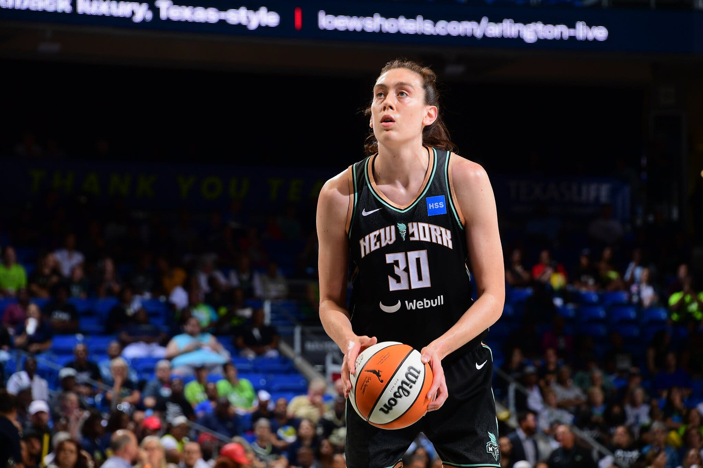
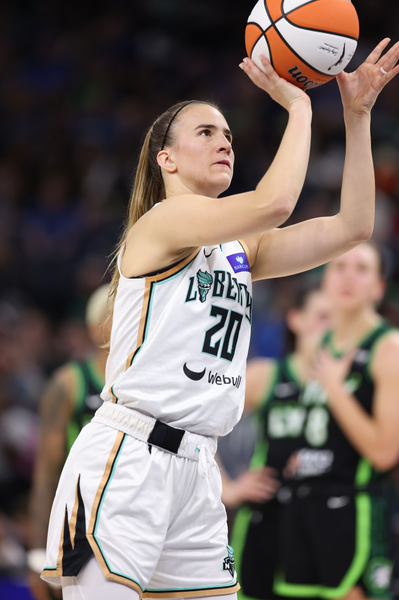
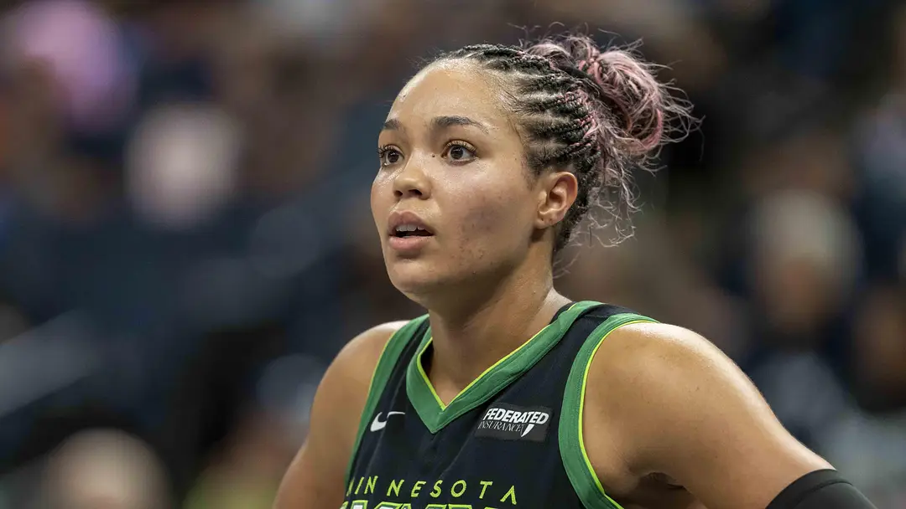

Breanna Stewart
New York Liberty

Sabrina Ionescu
New York Liberty

Napheesa Collier
Minnesota Lynx
With the WNBA's 30th season about to start, the 2028 Olympics being in the US, and new professional leagues popping up everywhere, I can't resist talking about basketball, even if it's to myself on the internet.
This is mostly how I'd explain basketball to myself- if I could go back to my past self a few years ago.
The WNBA and USA Olympic women's basketball are inextricably connected so I think it'd be cool to look at the history of both the WNBA and the USA Olympic women's basketball teams, side-by-side. Starting with the 2024 Olympic team and the surrounding WNBA seasons.

| Name | 2024 WNBA Team |
|---|---|
| Jewell Loyd | Seattle Storm |
| Kelsey Plum | Las Vegas Aces |
| Sabrina Ionescu | New York Liberty |
| Kahleah Copper | Phoenix Mercury |
| Chelsea Gray | Las Vegas Aces |
| A'ja Wilson | Las Vegas Aces |
| Breanna Stewart | New York Liberty |
| Napheesa Collier | Minnesota Lynx |
| Diana Taurasi | Phoenix Mercury |
| Jackie Young | Las Vegas Aces |
| Alyssa Thomas | Connecticut Sun |
| Brittney Griner | Phoenix Mercury |
Going into the 2024 Finals, the New York Liberty had never won a championship title and they would be facing the Minnesota Lynx - who had won the title 4 times.
Napheesa Collier and Breanna Stewart would go on to start a new professional women's basketball league together in 2025 - Unrivaled!
Napheesa Collier started playing in the WNBA in 2019 and has played for the Lynx her entire career so far.
Breanna Stewart started playing in the WNBA in 2016. She started her career with the Seattle Storm before moving to the Liberty for the 2023 season.
Jewell Loyd and Breanna Stewart both won their first 2 WNBA championships together when they played for the Seattle Storm (2018 and 2020).
And they'd both win their 3rd WNBA championship titles with new teams. With Stewart's 2024 win with the Liberty and Jewell Loyd's 2025 win with the Las Vegas Aces
In 2023 Stewart started playing for the Liberty and Jewell Loyd stayed with the Storm for a while...
For Jewell Loyd's 10th season in the WNBA, she moved teams for the first time ever when she signed with the Las Vegas Aces for the 2025 season.
It's common for sports people to talk about "dynasties". The WNBA hasn't really ever settled enough to have clear cut and definitive dynasties, but the Las Vegas Aces are the closest "modern era" example what could be a "dynasty" in WNBA terms.
...all played for the Aces in 2024